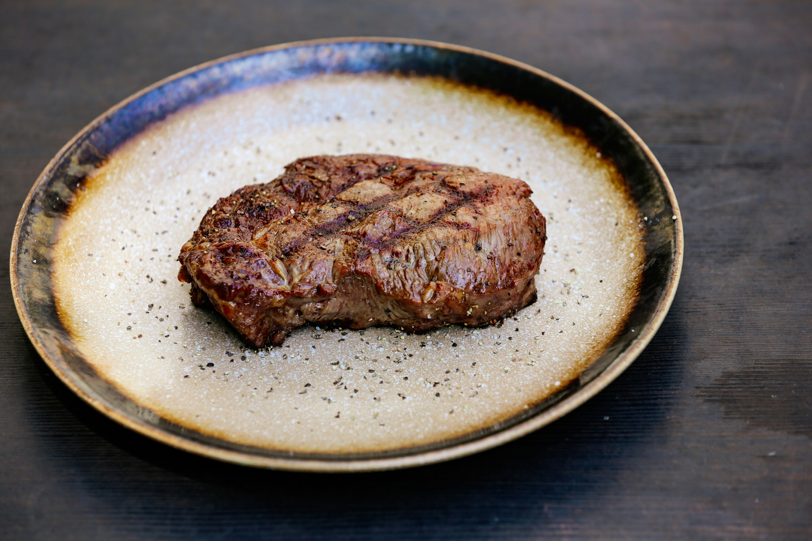

Home
Onion Steak Recipe

Description
This is a delicions quick-to-make latin style dish that consists of thinly slinced eye round steak
cooked with onions for a sweet and savory taste.
Ingreadients
- 1 lbs of eye round steak
- One spanish onion
- Adobo Goya seasoning
- Minced garlic
- Olive oil
- White vinager
Steps
- Place the thinly sliced eye round steak in a deep bowl.
- Add a tablespoon of Adobo Goya seasoning to the steak.
- Add a tablespoon of minced garlic to the steak.
- Add two tablespoons of vinegar to the steak.
- Mix the ingredients thoroughly with the steak.
- Slice the onion and then pour a teaspoon of salt on the slices.
- Heat a pan in medium heat for five minutes.
- Pour two table spoons of olive oil in the heated pan.
- Saute the onions for a minute or two.
- Cook the steak for three minutes on each side.